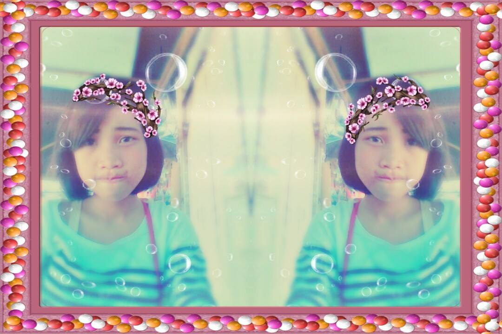
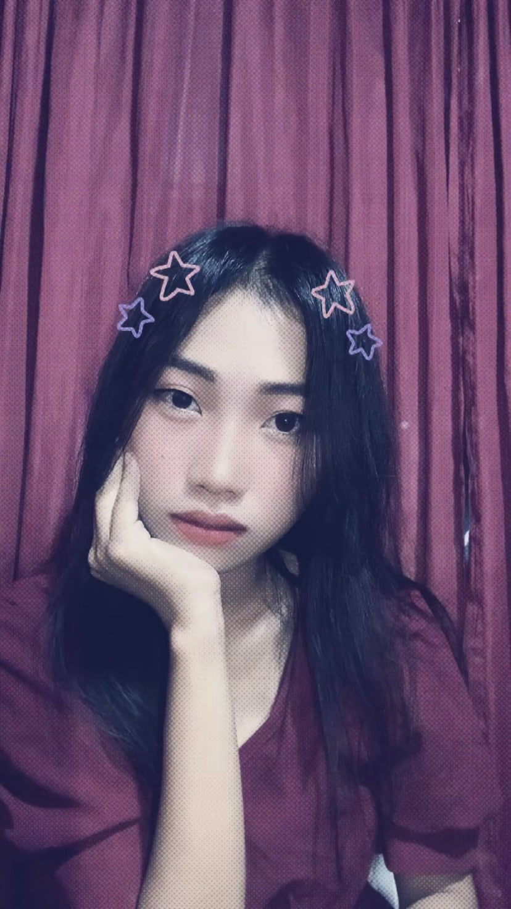

My Life Story
INTRODUCTION
Welcome to my life story! Here, I share the experiences and moments that have shaped who I am today. From my childhood to my teenage years and now as an adult, each phase has been a journey of growth, learning, and discovery. In my childhood, I loved playing with friends and learning the value of hard work, like selling junk foods at school, which taught me entrepreneurship at an early age. My teenage years were filled with exploration, new hobbies, and collecting medals to celebrate my achievements. Now, as an adult and a college student, I’m learning to balance responsibilities and manage my time while pursuing my BSIT degree at Saint Michael College of Caraga. Through these experiences, I’ve gained valuable lessons that continue to guide me toward my goals. I invite you to explore my story, and I hope it inspires you to reflect on your own journey and growth.
Childhood Experiences
If you're familiar with the B612 app, that was my go-to selfie camera when I was a child. Back then, I loved playing with our neighbors and, of course, with my best friend. Even at a young age, I already knew how to sell different things. I used to sell junk foods at our school, and it was such a fun experience. I truly enjoyed it and learned a lot from it.
Teenage Experiences

During my teenage years, I enjoyed spending time with my friends, exploring new hobbies, and learning more about myself while facing the challenges and excitement that came with growing up. In my teenage era, I loved collecting my medals and achievements as a reminder of my hard work and dedication in life.
Adult Experiences
College life has taught me responsibility, independence, and time management while pursuing my BSIT degree at Saint Michael College of Caraga. Balancing academics, personal life, and finances has helped me grow and become more prepared for the future. Through new friendships and challenges, I have gained valuable life lessons that will guide me in achieving my goals.